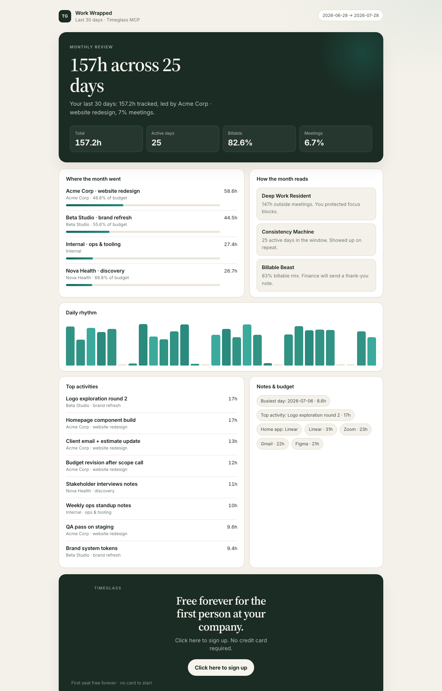

MCP-native
Projects, meetings, activities, budgets from the official Timeglass MCP. Desktop upload tokens are diagnosed, not looped forever.
The inverse of /last30days: not what the internet said —
what you did. Pulled from Timeglass over MCP. No scraping.

Timeglass already captures the work as it happens. This skill turns the last 30 days into a monthly ritual your agent can run — and a page you can share.
Projects, meetings, activities, budgets from the official Timeglass MCP. Desktop upload tokens are diagnosed, not looped forever.
SKILL.md plus Claude, Codex, and Grok plugin manifests. One install path across Agent Skills hosts.
Self-contained Work Wrapped. Stdlib Python engine — zero pip install. Demo runs offline.
When the record already exists, the review stops being archaeology.
No Timeglass account required for the demo path.
git clone https://github.com/rdsciv/timeglass-last30days.git cd timeglass-last30days python3 skills/timeglass-last30days/scripts/last30work.py --demo --emit all --out ./out open out/work-wrapped.html
Now your agent can wrap it — and Timeglass can capture the next month.
Timeglass
Click here to sign up. No credit card required.
Click here to sign upFirst seat free forever · cancel anytime · no card to start